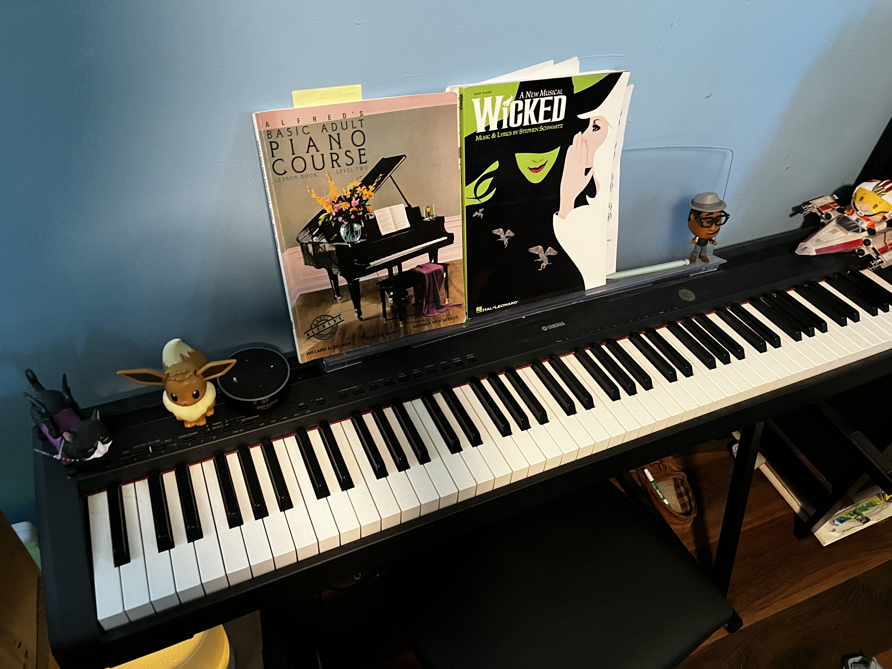
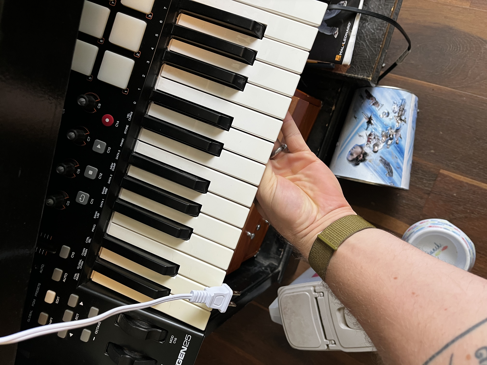
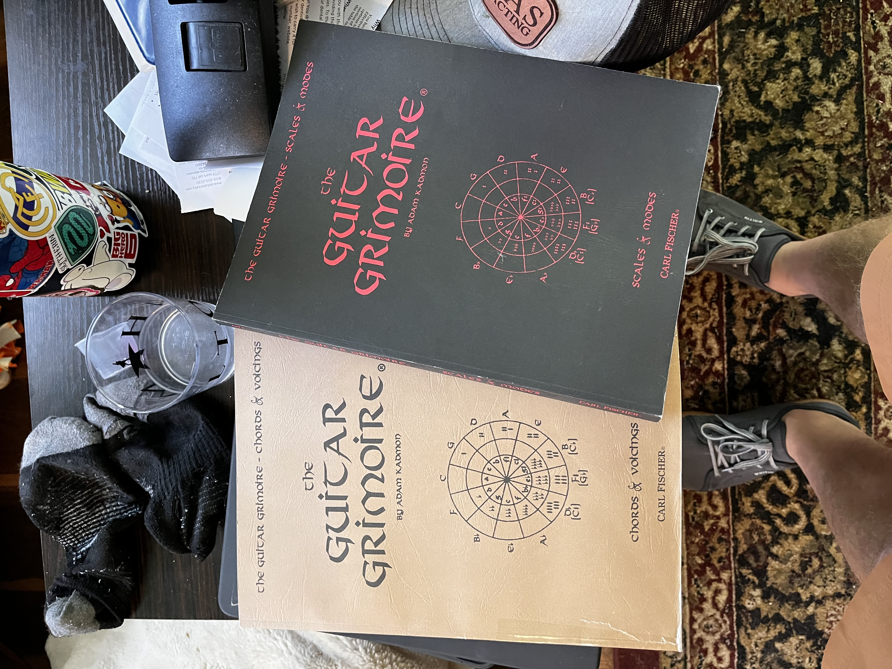

  
My hobby that keeps me creative is music. So I have been playing piano since I was about 4, I had lessons all growing up and when I'm in practice I am a pretty decent pianist, that love then led to me picking up other instruments. When I was 10 I started percussion in band at my middle school, I played all throughout middle and highschool, and after that I was involved in some various drum groups (Which I of course needed drums and other percussion equipment for) I have been playing guitar since I was about 12 years old, I started out with a Squier Stratocaster and a Roland Micro Cube amp. I had lessons for a few years and have played in a good number of bands and jam groups, guitar was the first time though that I really started to get the bug for the hunt and aquisition of gear. Suddenly I needed 5 different amps, 6 guitars, 3 keyboards, a drum set, frum pad, audio interfaces, microphones, a DAW... Oh no now I have to learn how to use the DAW, how to mix my recordings, how to set up my recording equipment, how to dial in my amps, how to create synth tones, how to program my drumpads, how to properly mic up and dial in an acoustic vs. an electric guitar, not to mention on top of all of this I still have to actually practice the actual instruments themselves, scales, rythyms, techniques, styles, improvistion, it never ends, but I still love it.